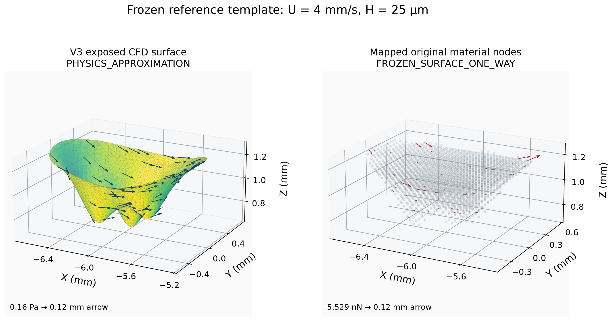
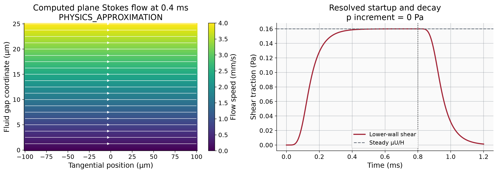
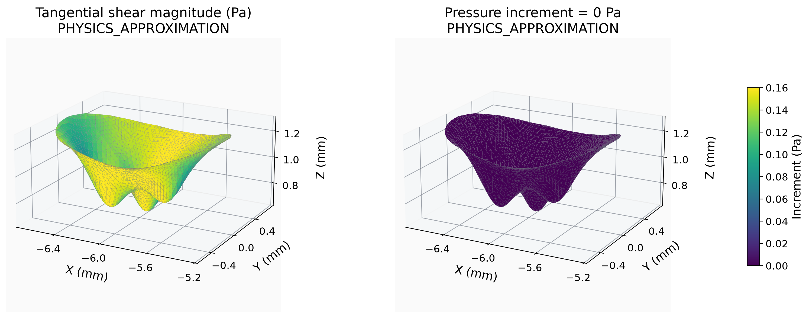
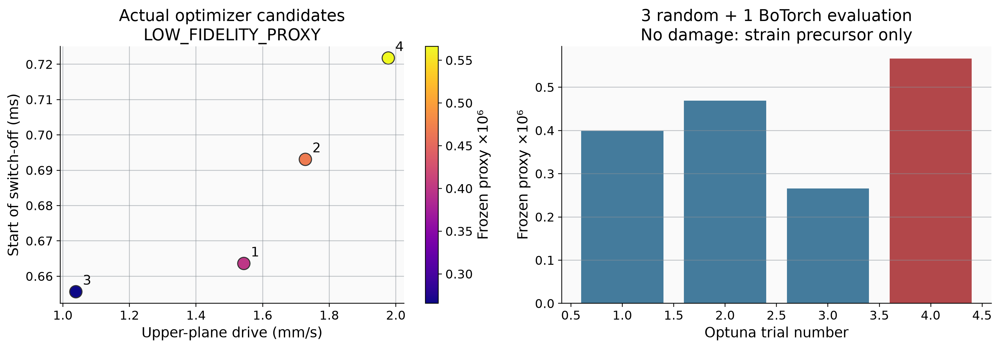
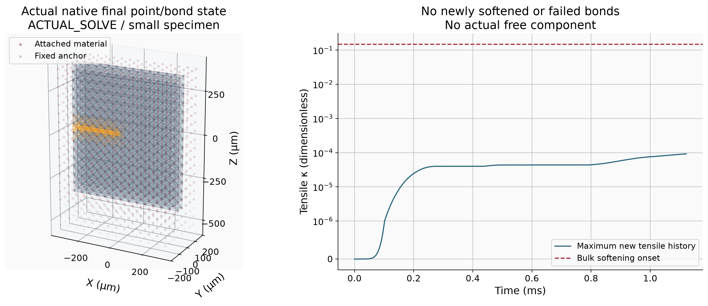
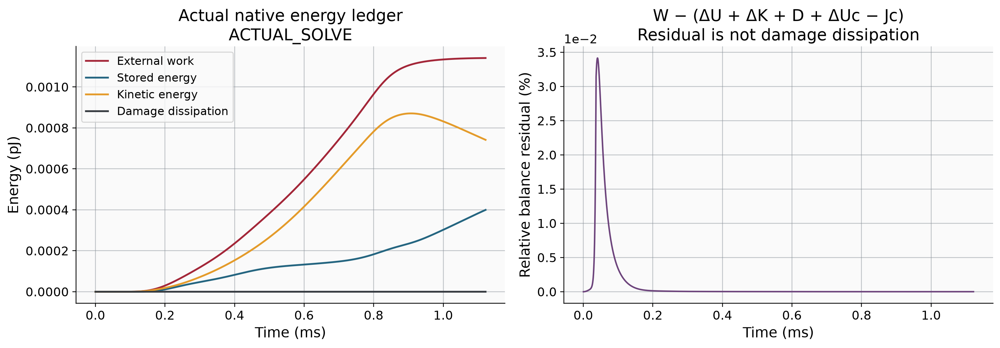
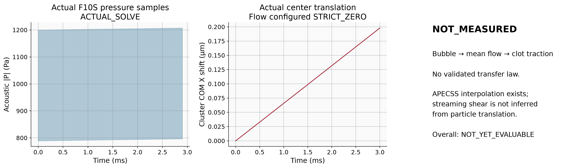
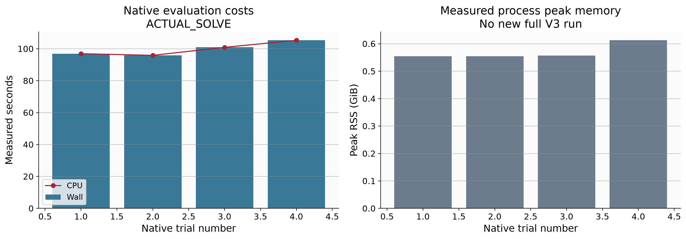
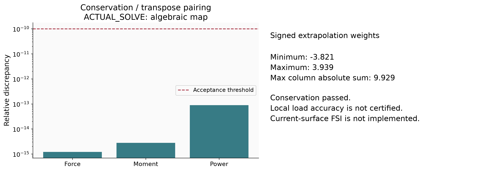

4 次有效原生小试样计算；没有新增损伤或真实游离块体。Stokes 局部平面近似；尚无微泡 → 声流 → 血栓牵引的已验证转换。没有运行新完整 V3。

Actual exposed CFD triangles and original 1927 material nodes. Traction is a local plane approximation; no new V3 fluid or solid solve. Signed affine weights are used.
SVG
Infinite parallel planes with a stationary lower wall and moving upper wall. This is not a computed bubble flow; the finite specimen edge and V3 curvature are not resolved.
SVG
Zero pressure is the explicit plane-flow result, not missing pressure replaced with a fitted field. Historical steady background pressure is not added again.
SVG
Numbers are persisted Optuna trial IDs. Trial 0 failed during initialization and has no score. Samples are insufficient to validate GP accuracy or an optimum.
SVG
Original point coordinates and IDs; no displacement magnification, fabricated shell or crack surface. For readability, displayed bonds lie in the central y slice. Orange dashed bonds are the unchanged original precrack, not new damage.
SVG
Trapezoidal actual-force work on actual native displacement; original contact activation term retained. No new fracture means D = 0.
SVG
Read actual current F10S records. Its homogeneous-water proxy differs from the historical k-Wave geometry. Radial table support does not establish realizable clot shear.
SVG
CPU and wall are measured per native subprocess. Different geometry and physical duration preclude a validated speedup claim versus historical V3.
SVG
Affine weights preserve reference force and moment; the same transpose preserves virtual mechanical power. Negative weights can amplify local nodal forces, so these checks do not certify local traction accuracy.
SVG